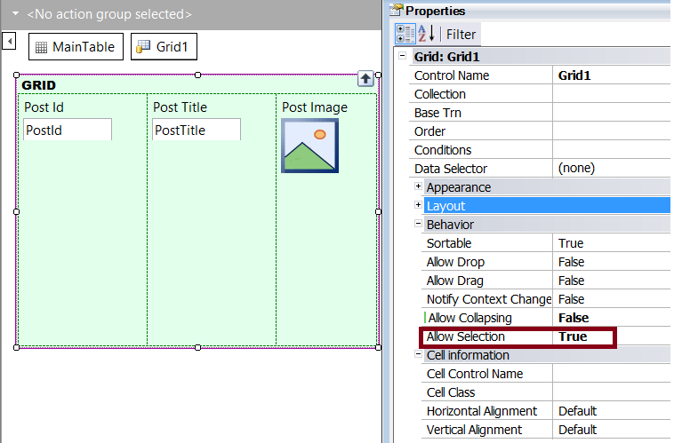
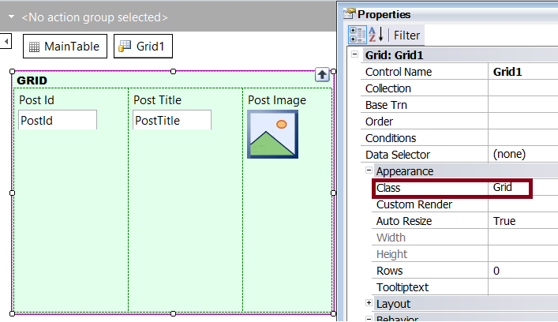
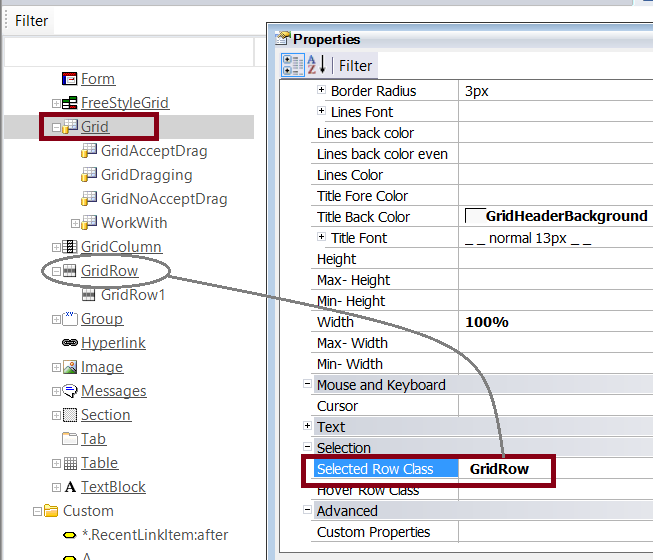
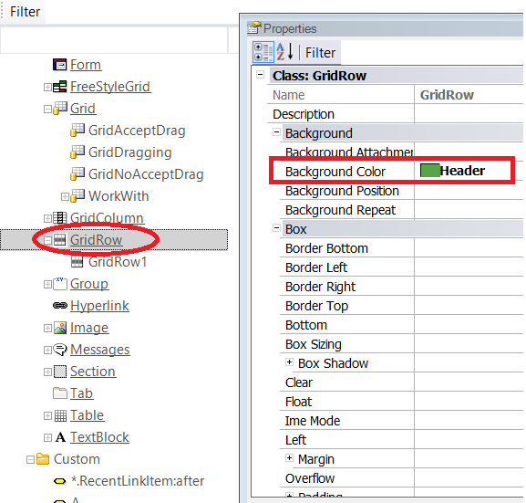

In Responsive Web Design (RWD) the control properties are configured in general through Theme Classes. In particular, if the Allow Selection property is configured for the grid, the selection color of the grid rows has to be configured as follows: 1. Configure the Allow Selection property of the grid.  2. Check which is the Theme associated with the object, and the class associated with the grid.  3. Edit the Theme, and configure the Selected Row Class property of the class associated with the grid (in the example, the "Grid" class).  The Selected Row Class property has to be configured with the name of a class descendant of the GridRow class. For the GridRow (or any of its descendants), configure the BackColor property, to set the grid row selection color.  Notes
AvailabilityAs from GeneXus X Evolution 3 Upgrade 4. |